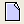
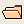
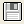

Modelle anlegen, öffnen und speichern
Ein neues Modell anlegen
Um ein neues Modell anzulegen haben Sie drei Möglichkeiten:
- Öffnen Sie in der Menüleiste
das Menü Datei und wählen Sie Neues Modell oder
- Drücken Sie die Tastenkombination Strg + N oder
- Klicken Sie in der Standarsymbolleiste
auf die Schaltfläche

.
In allen drei Fällen wird sich ein neues Modell mit dem Namen unbenannt öffnen.
Sobald Sie das Modell gespeichert haben wird der Name der Datei als Name für dieses Modell
übernommen.
Um ein vorhandenes Modell zu öffnen haben Sie drei Möglichkeiten:
- Öffnen Sie in der Menüleiste
das Menü Datei und wählen Sie Öffnen oder
- Drücken Sie die Tastenkombination Strg + O oder
- Klicken Sie in der Standarsymbolleiste
auf die Schaltfläche

.
In allen drei Fällen öffnet sich ein Dialog, in dem Sie die Quelldatei eines
bereits vorhandenen Modells auswählen können.
Anmerkung: Unter Windows können Sie eine 3LGM²-Datei auch durch Doppelklick
auf die Datei, z.B. vom Windows-Explorer aus, öffnen.
Ein Modell speichern
Um ein Modell zu speichern haben Sie drei Möglichkeiten:
- Öffnen Sie in der Menüleiste
das Menü Datei und wählen Sie Speichern, um ein neues Modell
zu speichern oder ein bereits gespeichertes Modell unter dem selben Namen abzuspeichern.
Haben Sie das Modell mit dem Sie arbeiten bereits gespeichert und wollen es in eine
andere Datei schreiben, dann wählen Sie Speichern unter... im Menü Datei
aus.
- Drücken Sie die Tastenkombination Strg + S oder
- Klicken Sie in der Standarsymbolleiste
auf die Schaltfläche

.
Haben Sie Ihr Modell bisher noch nicht gespeichert oder haben Sie Speichern unter...
gewählt, so öffnet sich ein Dialog, in dem Sie den Ordner und den Namen der Datei
auswählen können.
Wurde das Modell bereits gespeichert, so wird die bisherige Datei durch den aktuellen Stand
Ihres Modells ersetzt.